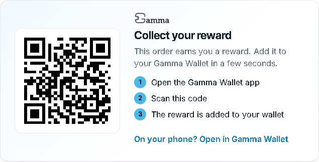
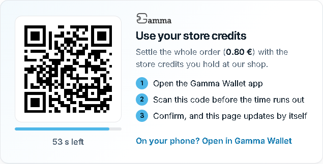
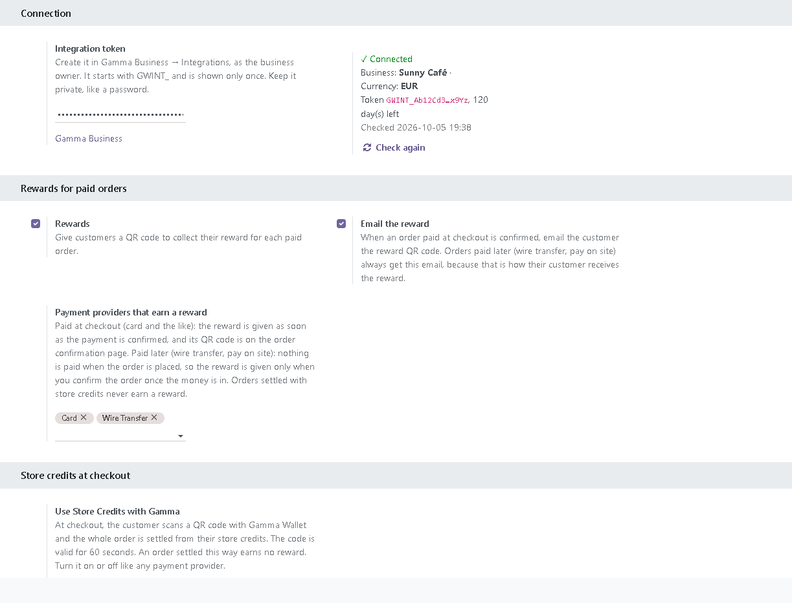

Gamma Wallet is a cardless loyalty wallet for local businesses. With this module, your customers earn a reward for every paid order of your Odoo eCommerce shop, and can settle an order with the store credits they hold at your shop, by scanning a QR code with the Gamma Wallet app. Credits are a promise of value at your shop, not money: Gamma never handles a payment.
When an order is paid and confirmed, the customer sees a QR code on the order confirmation page and in a reward email. They scan it with Gamma Wallet and the reward lands in their wallet, as store credits they can spend back at your shop. You choose which payment providers earn a reward; for wire transfer and pay-on-site orders, the reward follows when you confirm the order.

A payment provider that settles the whole order with the customer's store credits. After placing the order, the customer scans a QR code valid for 60 seconds; the page updates by itself and Odoo confirms the order. An order settled this way earns no reward.


The module connects to the Gamma Wallet service at integration.gamma-wallet.com. Every request carries your integration token and the module version. For an order that earns a reward or is settled with store credits, it sends the order reference, the total, the currency and the date, with the name of the platform (Odoo). About once an hour it checks the connection. It sends no customer names, addresses, email addresses or products.
The reward QR code image on the order pages and in the reward email is loaded from integration.gamma-wallet.com, so the customer's browser or email app contacts that server when it shows it.
Terms and conditions · Privacy policy · Support: developer@gamma-wallet.com
For Odoo 18, installed on your own server or on Odoo.sh (tested on Odoo 18 Community). Not available on Odoo Online, which does not allow custom modules.